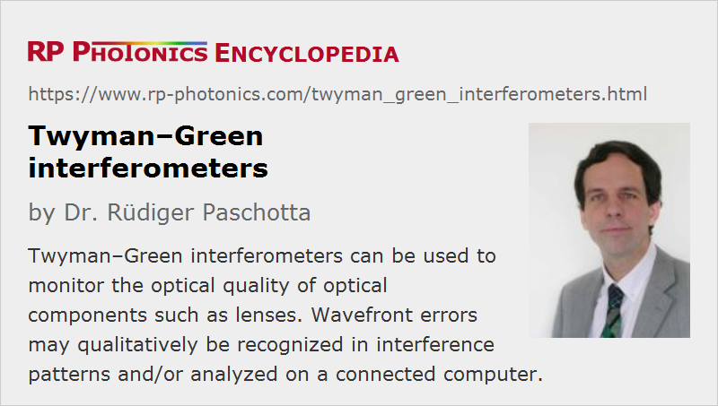

Twyman–Green Interferometers
Definition: an interferometer similar to a Michelson interferometer, but with expanded beams
More general term: optical metrology instruments
German: Twyman–Green-Interferometer
Categories: photonic devices, optical metrology
How to cite the article; suggest additional literature
Author: Dr. Rüdiger Paschotta
Twyman–Green interferometers, named after Frank Twyman and Arthur Green, are interferometers which are used for characterizing optical surfaces.
The optical setup is similar to that of a Michelson interferometer, but a Twyman–Green interferometer works with collimated beams which are expanded to a substantial diameter. In the simplest case, such an expanded beam is directly sent to the inspected surface, and the resulting interference pattern is imaged such that it can either be directly observed through an eyepiece (ocular lens) or registered with a monochrome electronic image sensor.
The inspected surface can be that of a mirror or some other kind of optical element; for use as an end mirror, one just requires some significant reflectivity of the surface, and there should be no additional reflection which could spoil the interference pattern. Some elements (e.g. lenses, prisms and mirror substrates) can also be inserted in the beam path for inspection in transmission, i.e., they are combined with a suitable kind of mirror. That can also work with microscope objectives, for example.
If the investigated surface is not flat, the optical wavefronts need to be approximately matched to it, e.g. using one or more lenses or curved mirrors. Otherwise, the resulting interferences stripes could be too closely spaced to be observed. Figure 2 shows a case where the curvature is not exactly matched, but good enough to easily resolve the interference rings.
In some cases, it is necessary to insert another beam expander before the object of test in order to image a larger area on the object.
For inspecting aspheric optics, one will usually require a high-quality reference surface (made e.g. from an optical flat) with which further devices can be inspected, because the deviation from a spherical mirror, for example, may be too high to measure.
The inspected surface must be imaged to the detector, such that each point in the image corresponds to a point on the inspected surface.
The object under test or the reference mirror is intentionally very slightly tilted e.g. by turning a micrometer screw, so that one obtains an interference pattern with regular stripes having an appropriate spacing. These stripes are perfect lines if the test surface exactly matches the reference surface. Any deviations between the surface shapes lead to distortions of those stripes (Fizeau curves). For topographic deviations of several wavelengths, one may simply count the number of stripes in order to measure the height.
Recorded digital images may be more closely analyzed with suitable computer software, which may allow detailed measurements of surface shape deviations.
The used reference mirror as well as the beam splitter and other optical components should have a very high optical quality, so that any observed distortions are only due to imperfections of the investigated objects.
Possible Alternative Solutions
Optical elements may also be tested with Mach–Zehnder interferometers.
A completely different approach is to use an optical profilometer, which measures the surface topography more directly.
Suppliers
The RP Photonics Buyer's Guide contains 2 suppliers for Twyman--Green interferometers.
Questions and Comments from Users
Here you can submit questions and comments. As far as they get accepted by the author, they will appear above this paragraph together with the author’s answer. The author will decide on acceptance based on certain criteria. Essentially, the issue must be of sufficiently broad interest.
Please do not enter personal data here; we would otherwise delete it soon. (See also our privacy declaration.) If you wish to receive personal feedback or consultancy from the author, please contact him e.g. via e-mail.
By submitting the information, you give your consent to the potential publication of your inputs on our website according to our rules. (If you later retract your consent, we will delete those inputs.) As your inputs are first reviewed by the author, they may be published with some delay.
See also: interferometers, Michelson interferometers, optical profilometers, Fizeau interferometers
and other articles in the categories photonic devices, optical metrology
|  |
If you like this page, please share the link with your friends and colleagues, e.g. via social media:
These sharing buttons are implemented in a privacy-friendly way!